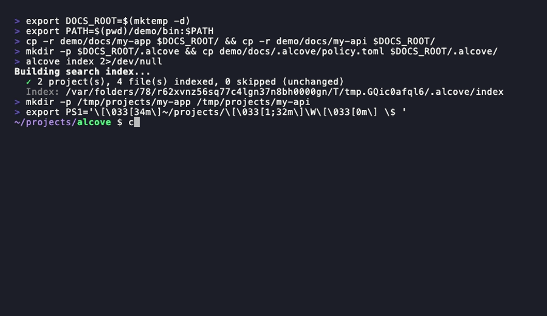

alcove serves your project knowledge over a local HTTP API with hybrid BM25 + vector search. Agents pull the two docs they need — not the twelve you’d stuff into context. One setup, every agent, every project.
project auto-detected from the working directory — two relevant passages returned, not twelve whole files
The problem
It doesn’t know your architecture, ignores constraints from decisions you already made, and asks you to re-explain the same things every Monday. The usual fixes all fail the same way — and Anthropic’s own docs warn that bloated config files make agents ignore your actual instructions.
CLAUDE.md · AGENTS.md · .cursorrules
~/.alcove/docs/my-app/ — private, searched on demand, never in the public repo
Measured scope
Rust, no Docker, no Node runtime, no Python env. Tantivy for BM25, fastembed (ONNX) for vectors — everything runs on your machine.
Features
Ranked BM25 the moment an index exists, grep fallback when it doesn’t, vector similarity once you download a model. The agent never chooses a mode.
tree-sitter turns your source into a module-level CODE_INDEX.md — modules, functions, types across 12 languages, safe on monorepos.
Best match first, one result per file, relevant passages instead of whole files — ripgrep would have injected ~10K tokens where alcove returns the paragraph that matters.
One query across every project: “rate limiting patterns” finds the decision you wrote in a different repo last spring.
policy.toml enforces required files and sections. validate and lint catch missing docs, broken links, orphans, and stale markers — CI-friendly JSON output.
Link an Obsidian vault or research notes as an isolated knowledge base. vault link — no copying; agents search it separately from project docs.
A background server (macOS login item, opt-out) keeps the index and model warm; sessions proxy to it in milliseconds.
Docs live in DOCS_ROOT, not in your repos. Public README, private PRD. Bearer-token auth on the local API.
A note in Obsidian becomes a project doc with one command; unmatched files land in an inbox for review.
Usage
/plugin marketplace add epicsagas/plugins
/plugin install alcove@epicsagas
# codex: codex plugin marketplace add epicsagas/plugins
brew install epicsagas/tap/alcove
# or
curl --proto '=https' --tlsv1.2 -LsSf \
https://github.com/epicsagas/alcove/releases/latest/download/alcove-installer.sh | sh
alcove setup — where your docs live, which categories to track, embedding model, background server, which agents to wire. Re-run any time; it remembers. Then alcove doctor confirms the whole stack.alcove search "auth flow" --scope project · --scope global across every project · --mode grep when you need exact matches
/alcove how is auth implemented? — the agent resolves the local API, searches, reads the top doc, and answers from your actual architecture
CWD auto-detection — switch directories, the doc layer follows. Override with MCP_PROJECT_NAME when a folder name doesn’t match
alcove index after editing docs (incremental) · alcove bench --corpus in CI to catch search-quality regressions before they ship

Claude & Codex — search · switch projects · global search · validate. One setup.
Why alcove
| Without | With alcove | |
|---|---|---|
| Context per session | Docs stuffed into config load every run | Hybrid search pulls only what this task needs, ranked |
| Code understanding | Agent sees text files only | tree-sitter index of modules and types in 12 languages |
| Switching projects | Re-explain everything, per agent | CWD auto-detects the project — zero reconfiguration |
| Switching agents | Each tool configured separately | One local API, eight agents share it |
| Sensitive docs | Sitting in project repos | Private on your machine, never in the public repo |
| Doc quality | Stale, inconsistent, unenforced | policy.toml + validate + lint, JSON for CI |
| “What did we decide about OAuth?” | Impossible | One global query across every project and vault |
Before you ask
Ripgrep returns entire files — five hits at 200 lines each is ~10K tokens, mostly irrelevant. alcove chunks documents, ranks chunks, and returns the passages that match. And a query like “how is the deployment pipeline structured” matches no keyword in DEPLOYMENT.md — vector search finds it anyway.
No — they do different jobs. Config files define how the agent should act; alcove holds what the agent should know. Putting your docs in config is what bloats context and degrades instruction-following.
They don’t fix relevance. A 200K window filled with the wrong docs still degrades output. The goal was never more context — it’s the right context at the right time.
Nothing but disk and RAM: a single Rust binary, index built in the background. Steady state is tens of MB; the default 90 MB embedding model stays local and optional — BM25 works without it.
Write it once in your own vault. Let every agent find it — in every project, on every session.